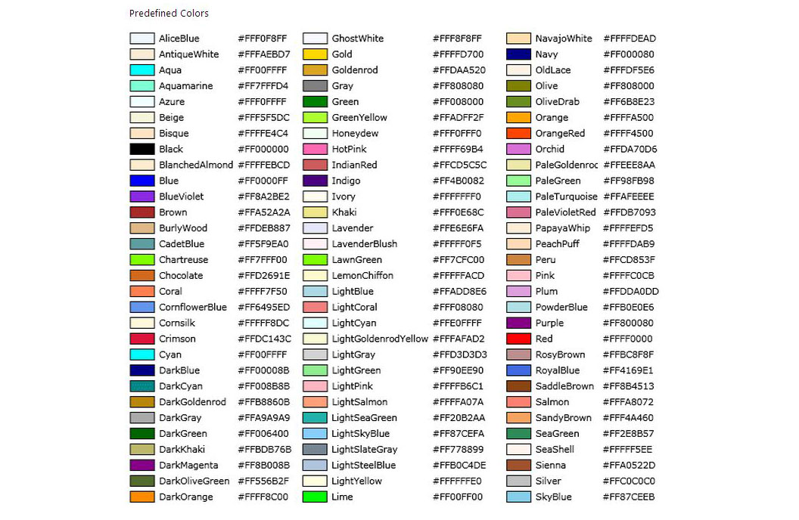

Ways of Defining Colors in CSS
In CSS colours can be specified using:
- Pre defined color names
- RGB
- RGBA
- HEX
- HSL
- HSLA
Pre defined color names
- Modern Browsers support 140 named colors.
- These are predefined and can be recognised by compiler by name.
- We can find the list in web.

RGB
- rgb(red,green,blue)
- We can also specify colors by its RGB Value.
- Color value for each, ranges between 0 and 255.
- Example :
- Black : rgb(0,0,0)
- White : rgb(255,255,255)
- Red : rgb(255,0,0)
- Green : rgb(0,255,0)
- Blue : rgb(0,0,255)
RGBA
- rgba(red,green,blue,alpha)
- alpha value stands for transperency.
- alpha ranges between 0.0 (fully transparent) and 1.0 (fully opaque)
HEX
- #rrggbb
- rr (red) , gg (green) , bb (blue)
- Hexadecimal Values range between 00 and ff (same as decimal 0-255).
- Example :
- Black : #000000
- White : #ffffff
- Red : #ff0000
- Green : #00ff00
- Blue : #0000ff
HSL
- hsl(hue,saturation,lightness)
- hue : Degree on color wheel drom 0°-360°. (0° = red, 120° = green, 240° = blue)
- saturation : Percentage Value , 0% = shade of gray & 100% = full color
- lightness : Percentage value , 0% = black , 50% = neither light or dark & 100% = white
- Example :
- Black : hsl(0,0%,0%)
- White : hsl(0,0%,100%)
- Red : hsl(0,100%,50%)
- Green : hsl(120,100%,50%)
- Blue : hsl(240,100%,50%)

HSLA
- hlsa(hue,saturation,lightness,alpha)
- alpha value stands for transperency.
- alpha ranges between 0.0 (fully transparent) and 1.0 (fully opaque)